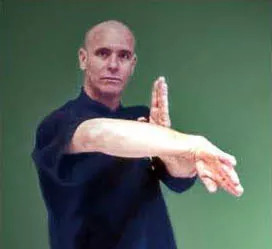

Entrevista com Mestre Francicsco Dias
Entrevista realizada para o boletim da Academia Pinheiros, publicado nos números 10 e 11 em 2011, por Thomas Pinheiro.
"Francisco Dias é o aluno mais antigo em atividade do Mestre Thomas Lo, participou de muitas dezenas de combates, desafios, e situações sem regra alguma, um lutador ímpar de Wing Chun; além de íncrivel vitalidade e humildade, é dono de técnica muito apurada, um verdadeiro mestre no Wing Chun. Além de ter iniciado seu treino em Wing Chun, Francisco Dias foi campeão paulista de boxe amador pelo CMTC Clube, também treinou Taekwondo chegando a faixa preta com Mestre Kim da academia Liberdade. Tive a honra de treinar muito com Mestre Francisco entre 1996 e 2007." (Thomas Pinheiro)
Mestre Francisco Dias, poderia nos contar um pouco como foi seu inicio no Wing Chun, o que o levou a treinar?
F.D.: Bem, eu sempre gostei de fazer exercícios, porém não era um garoto muito tranquilo, isto é, na época haviam muitas brigas na escola, e em qualquer atividade recreativa na rua. Resumindo, eu era baixinho para a idade, magro, e tido como encrenqueiro, constantemente chegava machucado em casa, e meu pai, a pedido de minha mãe, com intuito de canalizar a energia que sobrava, levou-me para uma academia na rua Augusta no final de 1972, então com 12 para 13 anos de idade conheci o Mestre Lo e o Wing Chun, nunca mais parei de treinar.
Como era a relação do mestre Lo com os alunos (quando começou, ou durante a época de aula na residência do Mestre Lo)?
F.D.: O Mestre Lo decidiu afastar-se da academia, eu continuei treinando, porém sentindo a falta das orientações do Mestre, decidi então procurá-lo, sabia qual o bairro, mas não tinha certeza da rua nem da casa... gastei três finais de semana, tocando campainha de casa em casa, até encontrá-lo.
Três outros alunos já praticavam com o Mestre em sua casa quando pedi para ser incluído ao grupo e fui aceito. O treino era bem diferente do aplicado na academia, bem mais detalhado, muito mais exigente, bem mais difícil, por conta da tradição que o Mestre impôs como disciplina.
Foi devido a esse tipo de treino que ficaram pouquíssimos alunos, a maioria não aguentava o ritmo, por exemplo: tínhamos que chegar as 6 horas da manhã e treinar até as 11h e 30 minutos initerruptamente, não podíamos tomar água e nem ir ao banheiro, se isso acontecesse podíamos voltar para casa pois o treino estava encerrado para os que não aguentavam esta disciplina.
Era duro mesmo! Não tínhamos tempo de descanso, somente pausa para explicações técnicas. No final de cada treino o Mestre nos servia chá, e comentávamos sobre o treino e filosofia até as 12hs. Você não ficava bom porque tinha esse objetivo, e sim por consequência do treino, extremamente rigoroso.
O que te desaponta vendo hoje em dia arte marcial, principalmente no kung fu?
F.D.: Pouca coisa me desaponta sobre arte marcial, acredito que os praticantes que se formam com diplomas comprados, treinos por correspondência, e os que creem em anabolizantes e tamanho de músculos são o que fazem a diferença, estes sim é que cedo ou tarde irão se decepcionar com eles mesmos, estão se deixando enganar.
Sem boa orientação, sem contato físico do Mestre na hora da prática, sem suor, sem disciplina e sem dedicação não haverá resultado.Para aqueles que acreditam que a prática de várias artes fazem o bom lutador, eu posso afirmar que estes jamais serão especialista em um único estilo. Se a sua arte marcial não tem soluções para quaisquer outras técnicas, o que estará errado será o praticante que não domina profundamente a sua própria arte. " Deverá praticar até que a arte se revele, e só estudando profundamente sua técnica, ela se mostrará eficiente. E não haverá decepções."
Algum ocorrido marcante nestes anos todos de treino?
F.D.: Todos os ocorridos são marcantes. Se está se referindo a ter posto em prática algumas vezes, sim, muitos ocorridos, e todos marcantes, com certeza até os que não tiveram o resultado esperado, e estes sim, são os mais marcantes. É com estes que se aprende realmente e se evita os repetir. "É no fogo da forja que a boa espada se faz apta para o uso". Todos os ocorridos são especialmente importantes, todos têm "detalhes", e eles proporcionam justificar este ou aquele movimento certo ou errado. O Mestre Lo costuma dizer que "A diferença entre quem sabe e quem sabe muito bem são os detalhes". Tudo é marcante, tudo é uma lição!
A maioria dos lutadores apostam seus treinos na força física, qual o seu ponto de vista sobre isso?
F.D.: Acredito que "funciona" aquilo em que você põe fé, se treinarmos o físico e a força, é isto que teremos, porém, qual o uso que se fará disso é que faz a diferença, pois tanto para o físico quanto para a força todos temos limites. Já a técnica, quanto mais se pratica e se estuda, mais próximos ficamos da perfeição. Quanto mais forte fisicamente ficarmos, sempre haverá pontos vulneráveis.
Fisicamente falando, há pontos no corpo que não podemos cobrir com músculos. Dentro de um ringue, com regras específicas, os músculos e o físico podem fazer a diferenças, para a autodefesa e a realidade fora dos ringues e sem regras, o conhecimento aprofundado da técnica e a capacidade de o por em prática faz a diferença, no entanto, é necessário um físico bem preparado e músculos bem condicionados para o emprego da técnica.
Alguma predileção nas técnicas do Wing Chun?
F.D.: Sim, como já disse, sempre fiz muita ginástica, isto me deu subsídio para preferir a segunda sequência de movimentos do Wing Chun: "Chum Kiu", traduzindo: passar pela ponte, ou quebrar a ponte. Subentende-se ponte, como aquilo que conduz a força do oponente, seus membros, sua cabeça ou seu tronco, se você destruir essas pontes por onde caminha a força, ela não mais virá em sua direção e o ataque será impotente. Esta técnica exige um condicionamento físico melhorado, como já disse, não devemos desprezar a condição física, devemos estar preparados fisicamente para esta ou aquela técnica especifica. "Wing Chun pode ser extremamente violento, porém jamais deve ser bruto".
Qual o conselho você daria para quem quer iniciar no Wing Chun?
F.D.: Não escolha o Wing Chun pela beleza, não conheço e nem vi outro estilo mais feio. Ele é bonito pela sua eficiência e isto depende de cada um. Não escolha por que quer entrar em forma. O Wing Chun não tem esse tipo de enfoque, se é este o motivo vá fazer outra atividade física, esporte... jogar bola... ou natação... tudo sistematizado, seu objetivo será mais facilmente alcançado.
Não escolha o Wing Chun porque parece o mais curto ou mais simples, curto não quer dizer fácil, e alcançar a simplicidade pode ser extremamente difícil, gastando-se várias décadas para atingir este propósito. Não escolha para ficar bom, o bom é o pior inimigo do melhor, ficar bom não deve ser o objetivo da prática, você ficará bom por consequência do prazer de praticar. Por fim, não escolha aleatoriamente... experimente, contudo se escolher este estilo não desista, ele tem o hábito de fazer os sem fibra logo escolherem outro tipo de arte, e ainda espero ver uma mulher levar o estilo a sério na prática, afinal ele, Wing Chun, foi criado por uma mulher.